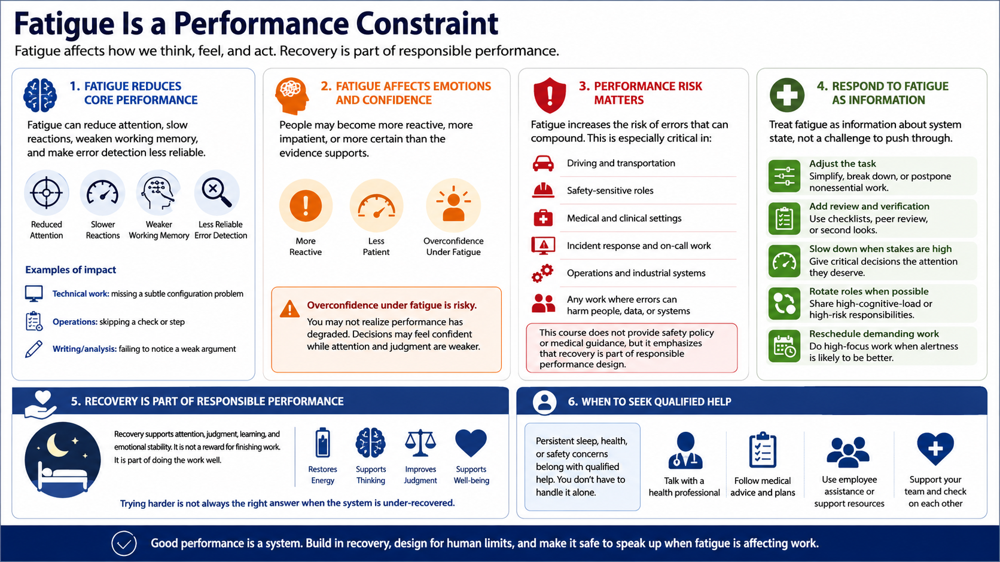

Sleep Loss, Fatigue, and Performance Risk
Connecting to LMS... Progress: in progress

Narration
Fatigue is a performance constraint. It can reduce attention, slow reactions, weaken working memory, and make error detection less reliable. In technical work, that might mean missing a subtle configuration problem. In operations, it might mean skipping a check. In writing, it might mean failing to notice that the argument no longer supports the conclusion.
Fatigue can also affect emotional regulation and confidence. People may become more reactive, more impatient, or more certain than the evidence supports. Overconfidence under fatigue is especially risky because the person may not realize performance has degraded. They may continue making decisions with the same level of confidence while using weaker attention and judgment.
Performance risk matters in driving, safety-sensitive roles, incident response, medical and operational settings, and any work where errors can compound. This course does not provide safety policy or medical guidance, but it does emphasize that recovery is part of responsible performance design. Teams should recognize when performance problems may be recovery problems.
Persistent sleep, health, or safety concerns belong with qualified help. In learning and workplace design, the practical response is to treat fatigue as information. Adjust the task, add review, slow down when stakes are high, rotate roles when possible, or reschedule demanding work. Trying harder is not always the right answer when the system is under-recovered.